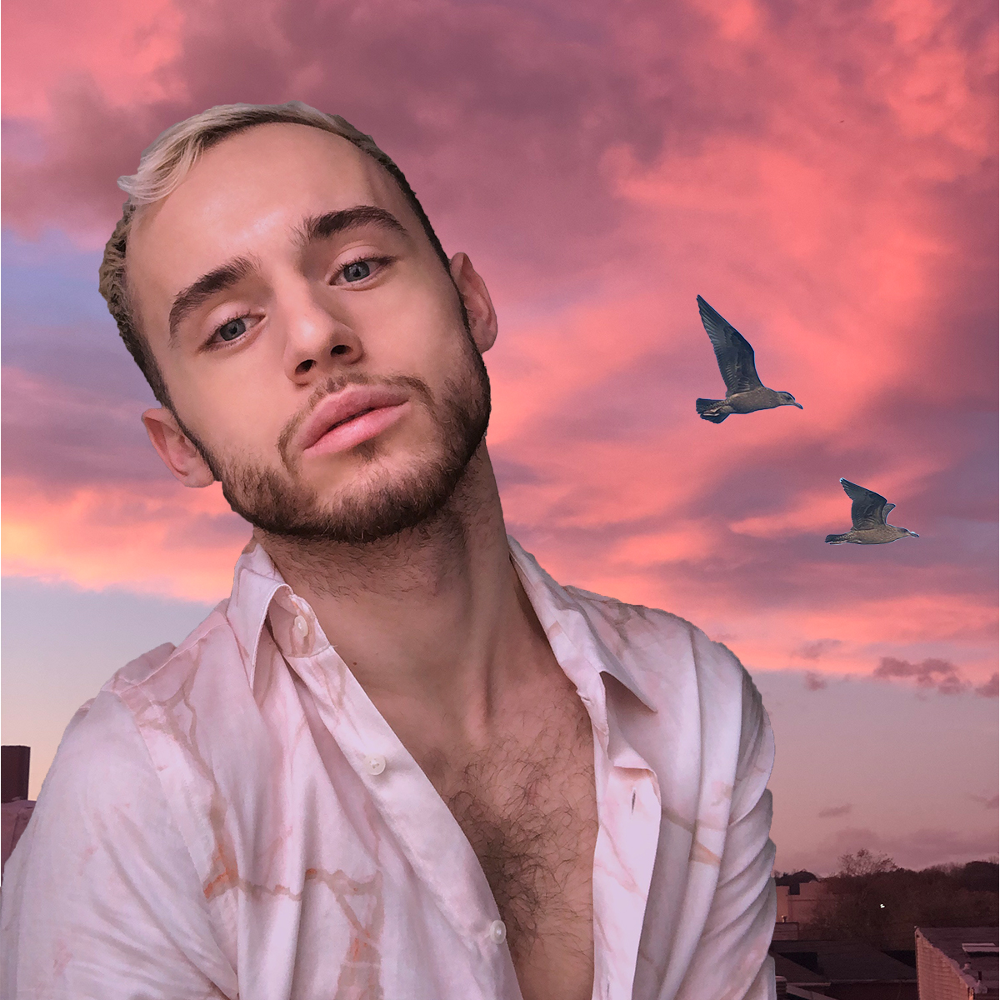

My Raster Assignment
Title: Behad's Self Portrait
Semester/Year: SPRING 2020
Software: Adobe Photoshop
Description: I first chose a self portrait of mine and then I used two other images for my project. The reason I chose those images as my background
was because I feel like those hues fit my bubbly yet laid back personality. I also picked two seagulls because they remind me of the beach and sunsets
at the beach are so peaceful and I love them. All content is mine.
________________________________________________________________________________________________________
My Vector Assignment
Title: Behad Vector Selfie
Semester/Year: SPRING 2020
Software: Adobe Illustrator
Description: This is a selfie of mine turned into an illusration. Once again, I chose violet/pink hues in my background because that represents
my personality and my mood in a daily basis. I also changed parts of my shirt and turned some of the colors into ocean blues that match my eye color.
All content is mine.
________________________________________________________________________________________________________
My GIF animation
Title: Behad Gif Animation
Semester/Year: SPRING 2020
Software: Adobe Photoshop
Description: For my gif animation assignment I chose a short clip of mine at the beach. I look very happy in it and I felt like I should have it as a gif as well.
It was shot in Atlantic City a couple of years ago and the content is all mine.
________________________________________________________________________________________________________
My audio assignment
Title: Behad Horror Story Audio Project
Semester/Year: SPRING 2020
Software: Audacity
Description: My story took place in an apartment where the main character gets home, lights up a cigarette and is listening to a song on his record player
when someone knocks on the door and then there's a gunshot heard. I used around 10 audio files to create my story.
________________________________________________________________________________________________________
My Programming assignment
P5 Sketch
Title: Behad Programming Assignment
Semester/Year: SPRING 2020
Coding/programming languages: p5
Description: I was having fun with this project so I included my favorite color and the
name of one of my favorite artists, Lady Gaga.